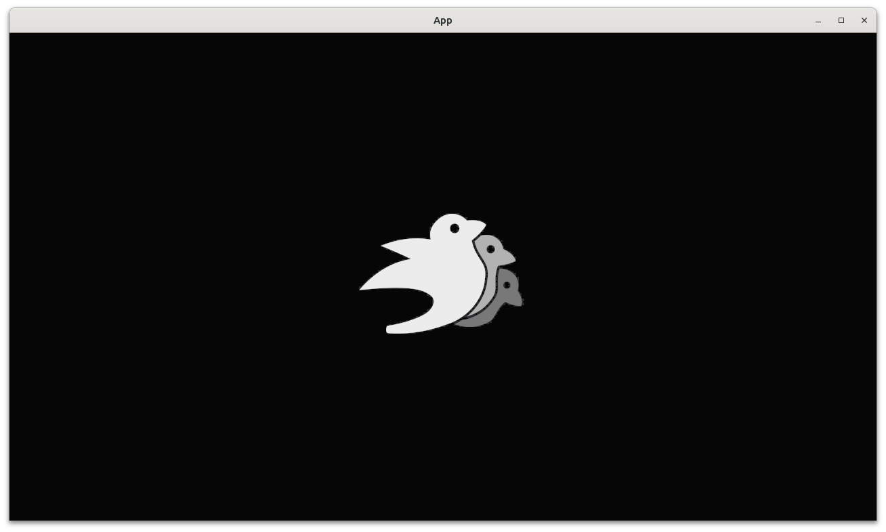
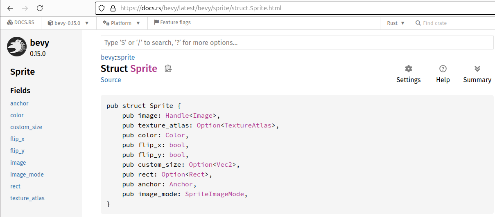

2.5. Add player sprite with a texture¶
This chapter shows how to add a player sprite with a texture to a game. This allows us to use images in our game.

This chapter introduces:
- The Bevy
Handle - The Bevy
Image cfg!(test), anifstatement only true during testing- Adding the
AssetPluginandTaskPoolPlugin - Initializing a Bevy image
- Where to put assets (i.e. images, sounds, etc.)
- Loading an image from file using
AssetServer
2.5.1.  First tests¶
First tests¶
Our first tests are the same as in earlier chapters,
forcing us to write create_app, count_n_players and
the Player component:
fn test_empty_app_has_no_players() {
let mut app = App::new();
app.update();
assert_eq!(count_n_players(&mut app), 0);
}
fn test_our_app_has_a_player() {
let mut app = create_app();
app.update();
assert_eq!(count_n_players(&mut app), 1);
}
See the 'Add a player' chapter for the implementations and an in-depth discussion.
There is one big difference in these tests: app.update is called
in each test! In all earlier chapters, we called app.update
at the end of the create_app function.
In this chapter, we don't, because doing so finalizes the App
too early and this will cause that our game
to panic in the main function (hence we cannot play the game).
This will be discussed in both the create_app and
the main function paragraph.
2.5.2. Third test: our player has a default scale¶
In the 'Add a player sprite' chapter
the size of the player's sprite was set to its
size (i.e width and height) in pixels, using
the scale of a player's Transform. In that context,
scale is a misnomer: it indicates the size of the player (and not the
scale).
When using an image, 'scale' is nicely named: an image
has its inherent size in pixels, where scale
will scale the image up or down. When the scale is set to one,
an image will be displayed at its original 1:1 scale.
In Bevy, a scale has three dimensions.
Here we test that the scale of our image is one in both two dimensions, as we are working on as 2D game. We will later assert that the scale in the third dimension is one too.
Here is the test:
fn test_player_has_the_default_scale() {
let mut app = create_app();
app.update();
assert_eq!(get_player_scale(&mut app), Vec2::new(1.0, 1.0));
}
2.5.3.  Third fix¶
Third fix¶
Although the function name get_player_scale is new, it has
exactly the same implementation as get_player_size in the previous chapter:
fn get_player_scale(app: &mut App) -> Vec2 {
let mut query = app.world_mut().query::<(&Transform, &Player)>();
let (transform, _) = query.single(app.world());
assert_eq!(transform.scale.z, 1.0); // 2D
transform.scale.xy()
}
In the context of using an image, it is more natural to work with a scale than with a size.
2.5.4. Fourth test: our player has a texture¶
Now for the texture:
fn test_player_has_a_texture() {
let mut app = create_app();
app.update();
assert!(get_player_has_texture(&mut app));
}
2.5.5. Fourth fix¶
The seemingly innocent test above, forces us into a complex fix:
- Write the
get_player_has_texturefunction - Modify the
create_appfunction - Write the
add_playerfunction
The get_player_has_texture function contains a query similar to what
we know:
fn get_player_has_texture(app: &mut App) -> bool {
let mut query = app.world_mut().query::<(&Sprite, &Player)>();
let (sprite, _) = query.single(app.world());
sprite.image.is_strong()
}
There are two new elements:
&Handle<Image>: this reads as 'a handle to an image'. This data type is chosen from the Bevy documentation ofSprite(see below), as it is the data type of theSpritefield calledtexture. A 'handle to an image' is a lightweight way to work with images, similar to the Rustboxclass: both can be copied and cloned and ... emptyhandle.is_strong()determines if the handle indeed refers to an image that is actually (being) loaded

Part of the Bevy Sprite documentation
The create_app function may look like this:
pub fn create_app() -> App {
let mut app = App::new();
if cfg!(test) {
app.add_plugins(AssetPlugin::default());
app.add_plugins(TaskPoolPlugin::default());
app.init_asset::<bevy::image::Image>();
}
app.add_systems(Startup, add_player);
app
}
The if statement and its body are new, I unpack it here:
if cfg!(test) { ... }is read as 'when running tests, run the code between curly brackets'. This means that this code is ignored when running our game from themainfunctionapp.add_plugins(AssetPlugin::default()): add the defaultAssetPluginapp.add_plugins(TaskPoolPlugin::default()): add the defaultTaskPoolPluginapp.init_asset::<bevy::render::texture::Image>(): initialize theImageasset
A plugin is a combination of entities, components and systems that work together to achieve a goal. It is a unit of modularity: you can put these in a Rust crate and become part of the Bevy ecosystem.
With the AssetPlugin present, we need to initialize it to allow for
working with images.
Note that one only needs to remember to add the AssetPlugin: the following
two lines were copied from helpful error messages.
Adding the default plugins (called DefaultPlugins) seems like
a good idea: one can be sure that the most important plugins
are present. The problem with this, however, is that will turn
our program into a full-blown application with a window that
needs to be closed by a user. Our tests should run without
user input, hence we cannot use all the default plugins.
Instead, we only add the plugins we need for testing in a build
that runs the test.
The reason why we do not add app.update() to the create_app function
is because of the if cfg!(test): as a consequence of this if statement,
running the tests will differ from running the game: the test build
will have two plugins added and one asset initialized,
where this will not be done when running the game normally.
When running the game normally with an app.update() in the end,
the program will panic, because add_player is called without
the needed plugins. This problem is solved by, in main,
adding the (many more) plugins there.
The add_player function may look like this:
fn add_player(mut commands: Commands, asset_server: Res<AssetServer>) {
commands.spawn((
Sprite::from_image(asset_server.load("bevy_bird_dark.png")),
Player,
));
}
The biggest surprise is the asset_server: Res<AssetServer>:
apparently, when adding a Bevy system, one can 'magically' get
access to an asset_server of datatype Res<AssetServer>.
A Res is a unique Bevy resource, in this case of type AssetServer:
a structure for assets.
The creation of the player's Sprite is similar too, except for
texture: asset_server.load("bevy_bird_dark.png"), where a texture is
loaded from file by the assets server. For this to work, that file (in this
case, bevy_bird_dark.png) must be present in the assets folder
of the Rust project.
2.5.6. main.rs¶
The main function has not changed at all:
fn main() {
let mut app = create_app();
let add_camera_fn = |mut commands: Commands| {
commands.spawn(Camera2d);
};
app.add_systems(Startup, add_camera_fn);
app.add_plugins(DefaultPlugins);
app.run();
}
The reason why we did not add app.update() to the create_app function
is because of that we add the default plugins here.
Would the plugins from the test build already have been added,
this would cause our program to panic: Bevy asserts
that a plugin is not added twice.
Because the plugins we add in our test build are part of the
default plugins added in our main function,
we need a mechanism to have the right plugins added to the right build.
Only after adding the default plugins here should our App be updated,
as calling app.update (which will be done by app.run) will assume
that the plugin for the AsserServer is loaded.
Here is how our game looks like:
2.5.7. Conclusion¶
We can now create an App with a player sprite that has a texture.
When running the App, we can see the player.
We have tested everything that the App does!
Full code can be found at https://github.com/richelbilderbeek/bevy_tdd_book_add_player_sprite_with_texture.